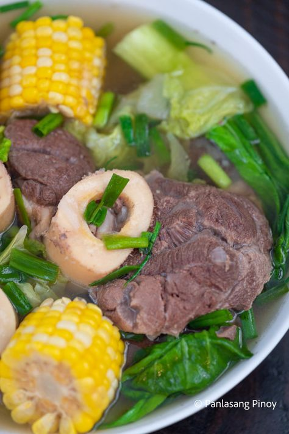
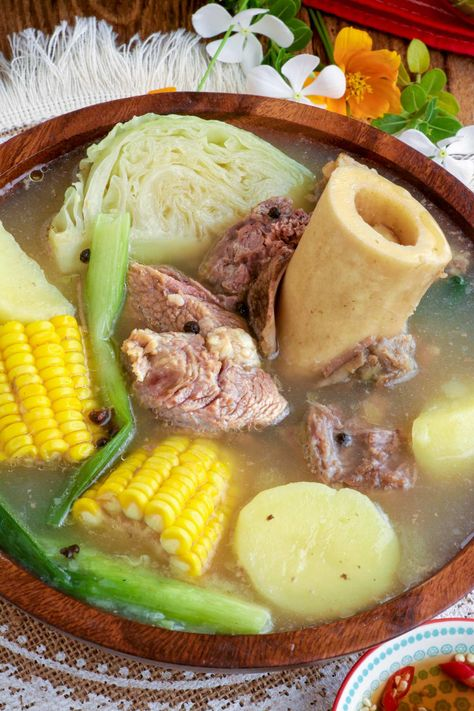
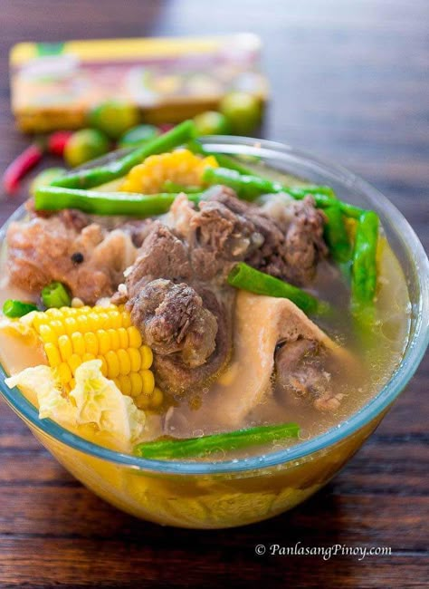
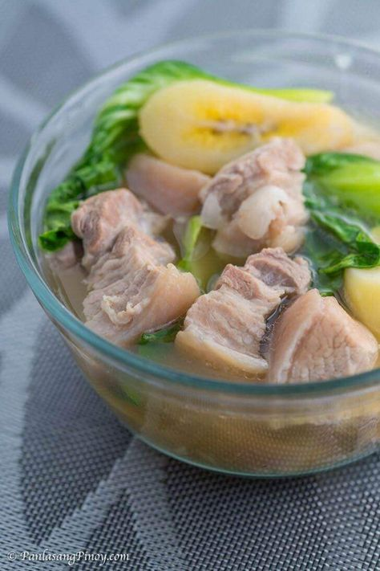
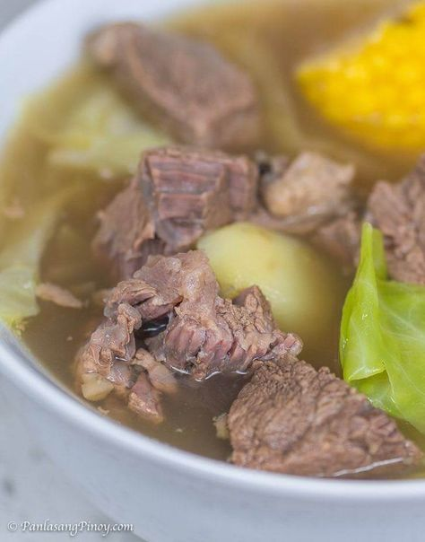

An Individual who seeks great opportunities.
"Everything is a Learning Experience."
I am flexible, reliable and possess excellent time keeping skills. I am an enthusiastic, self-motivated, reliable, responsible and hard working person. I am a mature team worker and adaptable to all challenging situations. I am able to work well both in a team environment as well as using own initiative.
More AboutI want to Hone my skills in programming especially in web design where i can manage my css skills.
Read MoreHoning my creativity skills in designing and creativity will help be to become more precise in html and other language.
Read MoreCreating something amazing is really an important asset on a software web developer to attract clients.
Read More
Ingredients
▢3 lbs. beef neck bone
▢1 Knorr Beef Cube ▢3 corn on the cob cut in half▢2 potatoes quartered
▢18 long green beans
▢½ head cabbage
▢1 bunch bok choy
▢6 cups water ▢1 onion chopped ▢4 cloves garlic crushed ▢3 tablespoons cooking oil ▢Fish sauce and ground black pepper to taste
The first step in this beef nilaga recipe is to grill your beef neck bones for 1 ½ minutes per side. After doing this, take a pot and heat 3 tablespoons of cooking oil, sautéing your garlic and onions. Once the onions soften, you can add the neck bones you had just grilled, and sauté it for another 2 minutes.

Next, pour 6 cups of water into the pot, and turn your heat down low as your nilaga steadily starts to boil. Cover your pot, and continue to let your meat cook until it becomes tenderer. If you feel like it needs more water, feel free to add the same!
As regards how long your neck bones need to cook, many recommend leaving it in the pot to simmer for about 2 to 4 hours. The more tender you want your neck bones to be, the longer you’ll have to keep them on the grill.

We’re finally at the homestretch! Add your potatoes, then cook them in your stew for about 6 minutes. Next, your remaining ingredients come in: long green beans, cabbage, and bok choy. Your beef nilaga needs only 3 minutes more, under which time you can season with fish sauce and ground black pepper. When the taste is to your liking, that’s it — you’re done!
Turn the heat off the stove and transfer your beef nilaga to a serving bowl.

1. Grill the beef neck bones for 11/2 minutes per side. Remove from the grill and set it aside.
2. Meanwhile, heat cooking oil and sauté the garlic and onion.
3. Once the onion softens, add the beef. Sauté for 2 minutes.
4. Pour water into the pot. Let it boil. Cover and continue cooking using low heat setting until the meat gets tender. Note: add more water as needed.
5. Add Knorr Beef Cube and corn. Cover the pot. Cook for 8 minutes.
6. Add potatoes. Cook for 6 minutes.
7. Add the long green beans, cabbage, and bok choy. Continue cooking for 3 minutes.
This is my simple website, feel free to contact me if you have any requiries
Some of the content is not owned by me, Thank you!